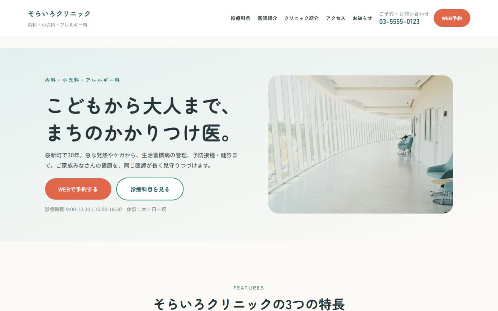
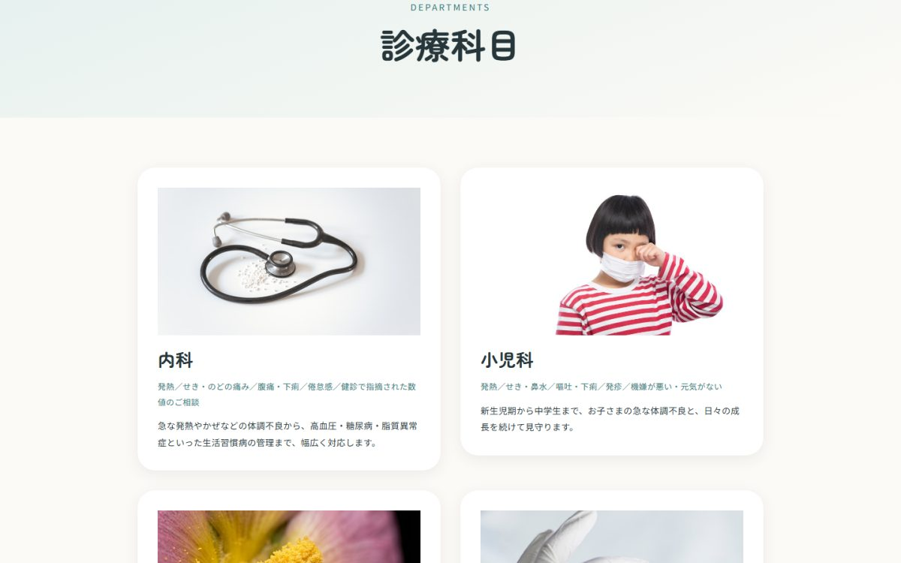

クリニック（内科・小児科）／ WordPressブロックテーマ
そらいろクリニック
WordPressのフルサイト編集（FSE）で構築しました。前作がクラシックテーマだったため、あえて技術の軸を変えています。


| 種別 | クリニック（内科・小児科・アレルギー科）／架空の医院を想定した自主制作 |
|---|---|
| 担当範囲 | 企画・デザイン・イラスト制作・実装・公開 |
| 使用技術 | WordPress（ブロックテーマ／FSE）／ theme.json ／ PHP ／ SVG |
| 制作物 | テーマ本体 46ファイル ／ デプロイ用パッケージ |
クラシックテーマとの作り分け
同じWordPressでも、クラシックテーマとブロックテーマでは作り方がまったく違います。前作のレストランサイトがPHPテンプレートを書く方式だったのに対し、こちらはデザインの定義を theme.json に集約し、ページはブロックを組み合わせて作ります。配色やフォント、余白をコードに直接書いている箇所は、テーマ内に一つもありません。
配色を切り替えられる
管理画面から配色を切り替えられるよう、スタイルバリエーションを用意しました。小児科を前面に出す暖色、内科・健診を前面に出す濃紺など、コードを触らずに雰囲気を変えられます。
イラストと写真を、役割で使い分ける
最初は挿絵をすべてSVGで描き起こしました。塗りの色にテーマの配色変数を使っているため、配色を切り替えるとイラストの色も一緒に変わります。外部ファイルとして読み込むとこの連動ができないため、あえてHTMLに直接埋め込んでいます。
ただ、通してみると「実在するクリニックに見えない」という弱点がありました。そこで信頼に関わる箇所だけを写真に差し替えています。医師紹介・院長あいさつ・診療科目・院内の様子がそれにあたります。一方、受診の流れの手順アイコンはイラストのまま残しました。表示幅が84pxしかなく、写真にすると何が写っているか判別できないためです。
差し替えは、assets/img/illust/ に同じ名前の画像を置くとイラストより優先される仕組みにしました。写真を消せばイラストに戻るため、テンプレート側は一行も変えていません。
カスタムフィールドをPHPなしで表示する
医師の役職・専門分野・経歴といった項目は、WordPress 6.5から使えるブロックバインディングという仕組みでテンプレートに差し込んでいます。クラシックテーマなら get_post_meta() を書いていた箇所を、PHPを一行も書かずに実現しています。
読み込むCSSを必要な分だけにする
FAQのアコーディオンや診療時間表のCSSは、そのブロックが実際に使われているページでのみ読み込まれるようにしました。使っていないページに不要なCSSを配信しません。
つまずいた点：公開後に「テーマディレクトリが存在しません」
既定で付いてくるテーマを削除した構成にしていたため、インストール時にWordPressが存在しないテーマを参照してエラーになりました。既定テーマを明示する設定を追加しましたが、それだけでは既に保存された設定は直らないと分かり、データベース側も修正しています。
つまずいた点：デプロイのたびにCSSとページが消える
Herokuではデプロイのたびに公開用フォルダが作り直されるため、その外に置いていたCSSや画像が配信されず、パーマリンク用の設定ファイルも毎回消えていました。ビルド時に自動で配置し直す仕組みを入れて解決しています。この対策は以降の案件にも引き継いでいます。
アクセシビリティ
- FAQはJavaScriptを使わず、HTMLの機能だけで開閉（キーボード操作にも対応）
- すべてのイラストに代替テキストを設定
- 診療時間表は狭い画面で「表の内側だけ」が横スクロールし、ページ全体は動かない